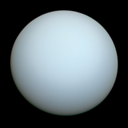

(點擊圖片開啟 NASA 3D 互動模型)
💎 基本概覽
| 類型 | 冰巨行星 (類木行星) |
|---|---|
| 平均直徑 | 約 50,724 km (地球的 4 倍) |
| 軌道距離 | 約 19.2 AU |
| 發現年份 | 1781 年 (首顆由望遠鏡發現的行星) |
| 自轉特性 |
自轉軸傾斜約 98 度 它是「躺著」繞太陽公轉的星球。 |
| 公轉週期 | 約 84 地球年 (約 30,681 天) |
| 大氣成分 | 氫、氦、甲烷 (甲烷吸收紅光使其呈現藍綠色) |
🔍 關於 天王星 (Uranus)
天王星是太陽系中大氣層溫度最低的行星，最低可達攝氏零下 224 度。與木星和土星不同，它的內部主要由冰（水、氨、甲烷）組成，而非液態金屬氫，因此被分類為「冰巨行星」。
在地科學習中，天王星最著名的就是它極端的傾斜角。這可能是因為早期受到大型天體撞擊所致。這種傾斜導致了它極端的季節變化——每一極都會經歷 42 年的持續日照與 42 年的黑暗。